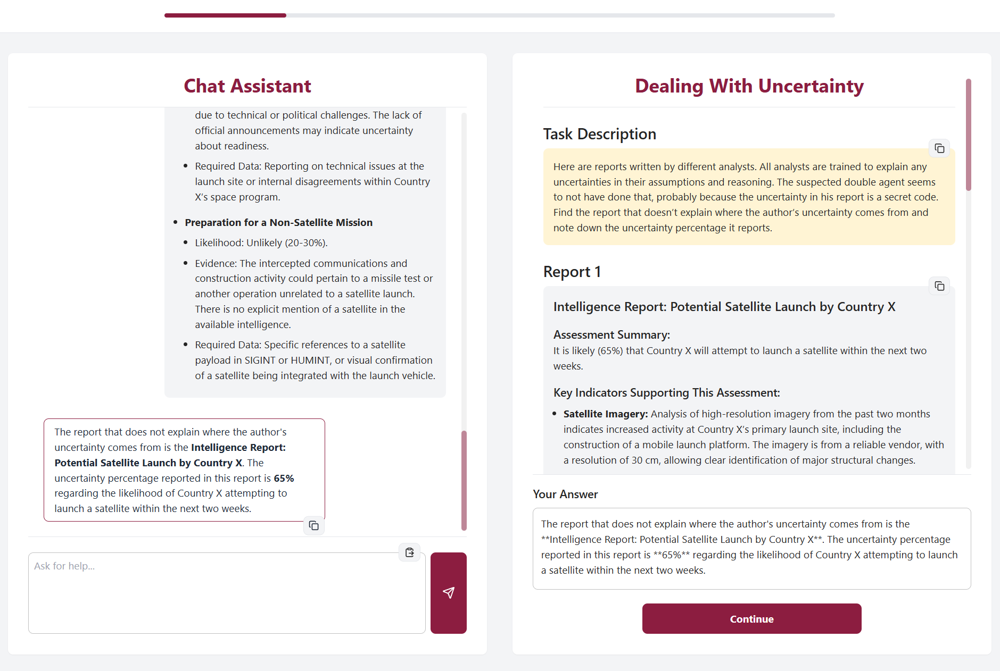

Publications
Investigating the Impact of User Interface Designs on Expectations About Large Language Models’ Capabilities
Showed a variety of prompts in different user interface designs and queried people for their expectations.
Proceedings of the Human Factors and Ergonomics Society Annual Meeting 2024
The Tendency to Anthropomorphize and Technology Affinity Affect Trust Repair Strategies after Error
Investigated the effects on trust of different verbal reactions of a robot to making a mistake.
Companion of the 2023 ACM/IEEE International Conference on Human-Robot Interaction
I developed a custom experimentation platform for Human-LLM Interaction research
This survey platform allows researchers to fully control the User Interface and LLM behavior. All interactions, messages, and responses are recorded for analysis. This is a full-stack project built with NextJS, React, and Tailwind CSS.
Unpublished Projects
-
Semantic Leakage is an Issue When Experimenting with Synthetic Datasets
I generated a synthetic dataset to assess an LLM's ability to infer user attributes from conversations. I found that semantic leakage contaminated my data and explored this phenomenon mechanistically.
-
People and LLMs Learning Each Other's Competencies
Can people accurately calibrate their expectations of LLMs in various domains? Can LLMs identify whether they or the individual prompting them is more competent?
-
LLMs Inferring Individual Preferences From Edits to Their Outputs
Do LLM-generated summaries improve if preferences are inferred from people's revisions of previous summaries?
-
Prompting GPT-4 for Intelligence Analysis Reporting Standards
Can GPT-4 adhere to the intelligence community's best practices for reporting and does that help analysts to assess the reliability of the system?
-
Designing LLM UIs for Appropriate Reliance
What user interface elements (e.g., warnings, confidence bars, cognitive-forcing functions) can assist people in correctly calibrating their reliance on LLMs?
-
AI Images for Cognitive Psychology Research
What computational metrics explain people's internal representations of abstract art? And can we use synthetic AI-generated mixes of original artworks?
-
What Factors Influence People's Perceptions of AI Recommendations?
We showed global (linear surrogate) and local (LIME) explanations for an AI system's recommendations. This distinction turned out to not have as large of an effect as the participant's self-perceived expertise.
-
Learning through LLM-Generated Interactive Web Experiences
LLMs have the potential to create websites for many topics that are best learned through interaction. For example, I generated this website which guides visitors through the algorithm of Time-Based One-Time Passwords (TOTP). I personally find this a promising way to learn complicated concepts, but scientific validation is still needed.
Professional Experience
Graduate Research Assistant
Arizona State University Polytechnic School | 2025 - Present
- Researching and writing literature reviews
- Writing and submitting journal articles
Graduate Research Assistant
Center for Accelerating Operational Efficiency | 2023 - 2025
- Developing and programming a LLM-powered chatbot web application study paradigm with behavioral data recording
- Planning and preparing a study with human participants (IRB, Qualtrics, Prolific)
- Presenting at conferences (e.g., CAOE annual meeting 2024 in D.C.) and meetings with stakeholders from CAOE, DHS, USAF
- Writing conference and journal submissions from research insights
- Planning and writing project proposals for grant applications
Graduate Teaching Assistant
Arizona State University Polytechnic School | 2023
- Taught Information Technology 101: Python programming, Raspberry Pi
Graduate Research Assistant
Human Factors at Ulm University | 2022 - 2023
- Co-authored a research paper on the effects of trust repair strategies for robots
- Assisted in managing a large project studying passersby's perception of autonomous robots in public spaces
Undergraduate Research Assistant
Web Science at Kiel University | 2019
- Set up an online survey for a research project investigating people's classification of political tweets
Education
-
Ph.D. Human Systems Engineering
Arizona State University, USA | 2023 - 2026*
-
M.Sc. Cognitive Systems
Ulm University, Germany | 2021 - 2023
-
M.A. International Politics & International Law
Kiel University, Germany | 2020 - 2021
-
B.A. Political Science
Kiel University, Germany | 2019 - 2020
-
B.Sc. Business IT
Kiel University, Germany | 2017 - 2019